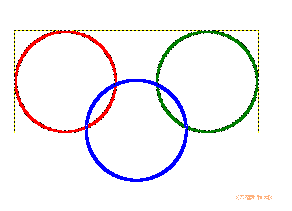

GIMP操作基础教程
作者：Teliute 来源：基础教程网
1、分散对齐
1）使用按选区对齐的方法，可以将三个对象平均分布；
2）新建一个图层，用椭圆选框工具绘制一个圆，再点“编辑－勾画选区”命令，绘制一个圆环，同样再画两个圆环；
3）选择“颜色选择”工具，选中红圆层、点击红圆选中它，再点菜单“图层－剪裁到选区”，同样剪裁绿圆和蓝圆；
4）用对齐工具把红圆和绿圆对齐，再在图层面板中，右键点击绿图层，选择向下合并，把红圆和绿圆合并到一起；
5）用颜色选择工具、下边选中叠加模式，在红圆和绿圆上点一下，选中图像；
6）再选对齐工具，下边选择“按选区”，在蓝圆上点一下，再点居中对齐，就可以将蓝圆对齐到红和绿的中间；

7）如果想保留原来的红圆和绿圆的独立状态，可以在图层面板合并前，分别复制一份，合并的层用完删除即可；
本节学习了GIMP中分散对齐的基本方法，如果你成功地完成了练习，请继续学习；
本教程由86团学校TeliuTe制作|著作权所有
基础教程网：http://teliute.org/
美丽的校园……
转载和引用本站内容，请保留版权信息和本站链接。
|
|
|
|
|
|